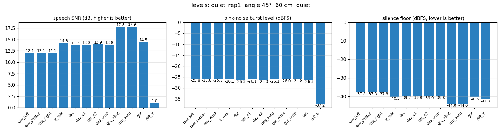
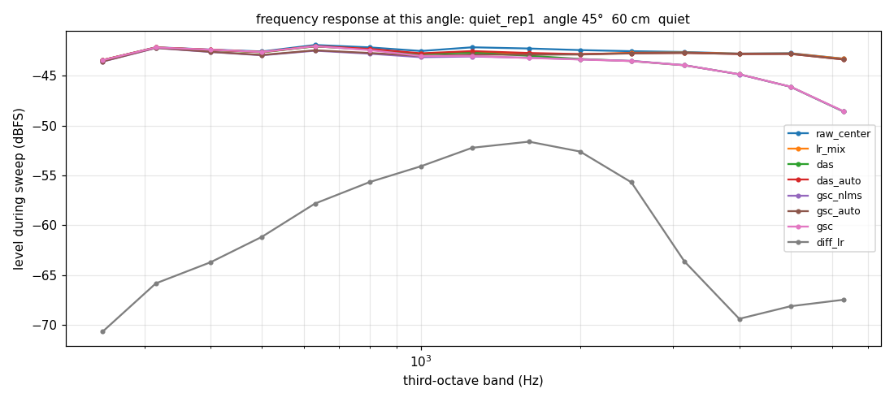
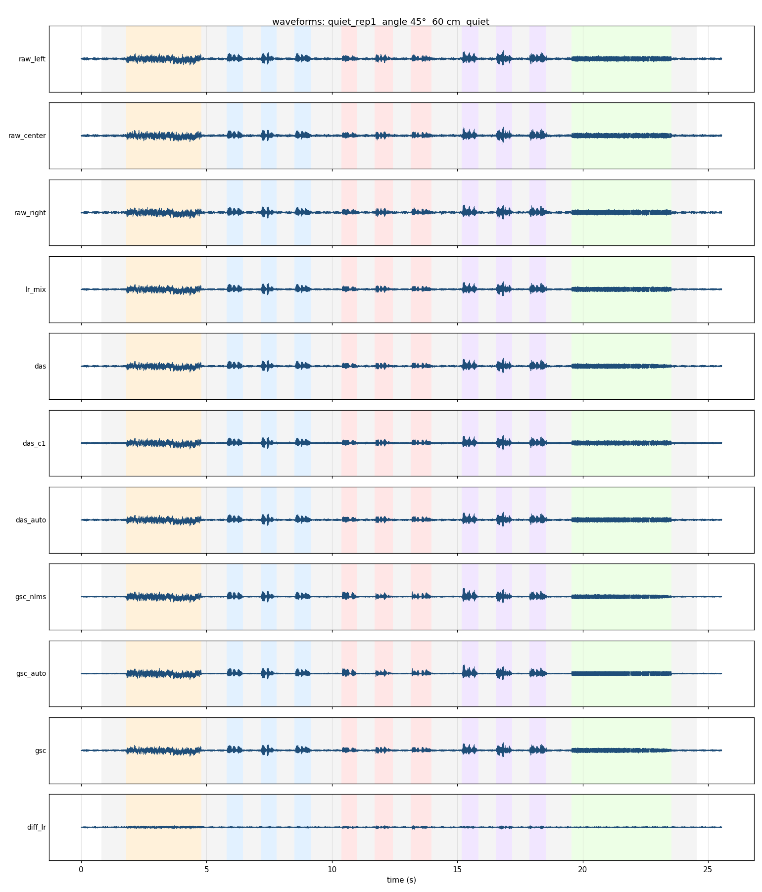
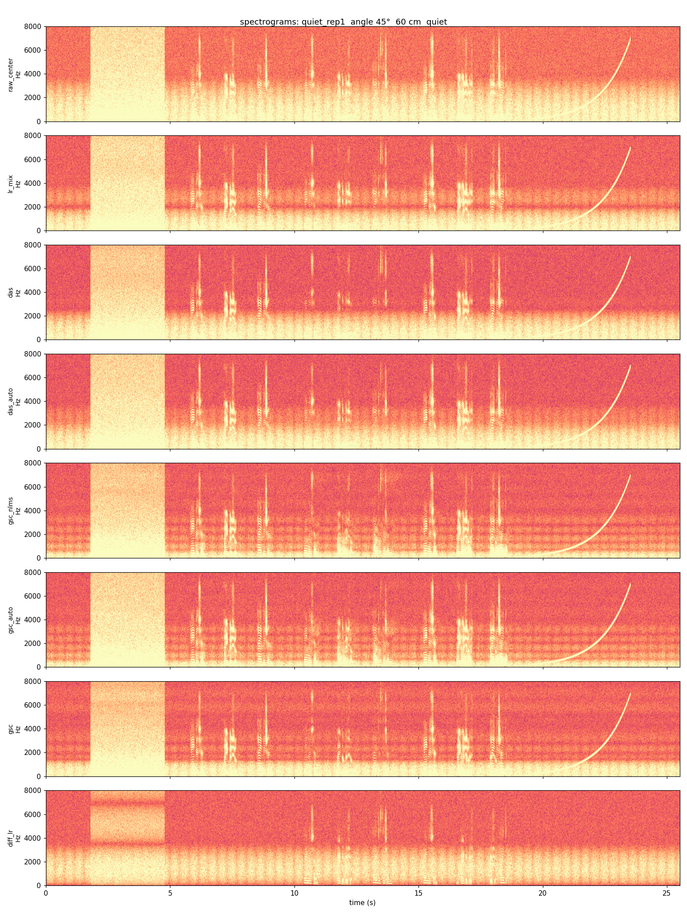

angle 45°, 60 cm, quiet, 25.55 s. Clip offset 0.8 s (confidence 0.942).
Microphones hear the source at +0° (L-R delay 0.0 samples, peak 7.7).
| path | rms_dbfs | speech_snr_db | noise_level_dbfs | silence_floor_dbfs | interf_rejection_db | interf_rejection_lf_db | snr_under_interference_db | speech_preservation | peak | clips |
|---|---|---|---|---|---|---|---|---|---|---|
| raw_left | -29.67 | 12.05 | -25.78 | -37.83 | 0.01 | 0.06 | 2.54 | 0.9741 | 9640 | 0 |
| raw_center | -29.67 | 12.05 | -25.78 | -37.83 | 0.0 | 0.0 | 2.56 | 0.9765 | 9535 | 0 |
| raw_right | -29.66 | 12.05 | -25.77 | -37.83 | -0.04 | -0.13 | 2.6 | 0.974 | 8834 | 0 |
| lr_mix | -30.07 | 14.27 | -26.1 | -40.2 | 0.7 | 1.22 | 3.28 | 0.9939 | 9124 | 0 |
| das | -30.27 | 13.74 | -26.3 | -39.7 | 0.66 | 0.79 | 3.16 | 9261 | 0 | |
| das_c1 | -30.04 | 13.84 | -26.13 | -39.75 | 0.64 | 0.85 | 3.21 | 0.9935 | 9248 | 0 |
| das_c2 | -30.35 | 13.93 | -26.3 | -39.92 | 0.62 | 1.03 | 3.08 | 0.9823 | 9102 | 0 |
| das_auto | -30.04 | 13.84 | -26.13 | -39.75 | 0.64 | 0.85 | 3.21 | 0.9935 | 9248 | 0 |
| gsc_auto | -30.06 | 17.87 | -25.82 | -43.97 | -0.14 | 0.79 | 2.08 | 0.9719 | 9502 | 0 |
| diff_lr | -40.2 | 1.04 | -37.19 | -41.67 | 8.19 | 7.5 | -11.56 | 0.0036 | 3305 | 0 |
| gsc | -30.36 | 14.48 | -26.26 | -40.49 | 0.91 | 1.34 | 3.39 | 0.9957 | 9037 | 0 |
| gsc_nlms | -30.28 | 17.8 | -25.97 | -43.97 | -0.22 | 0.66 | 1.91 | 0.9774 | 9313 | 0 |



